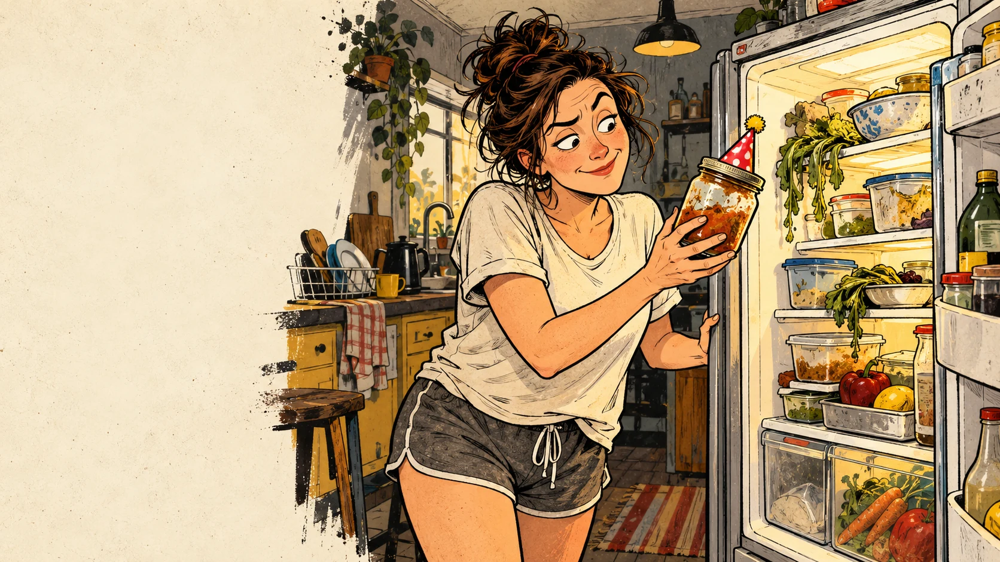

WOMEN’S EDITION • IN DEVELOPMENTFor the women
Everyday chaos deserves a good joke and a useful way through it. Dating, exercise, home life, parenting and travel are all on the drawing board.
Big pictures. Plain talk. A useful bloody hint.
For the woman who has plenty going on. Including that pile.
Women can be organised, impulsive, practical, messy, confident and completely over it. Sometimes before breakfast. This proposed edition has room for that range, with humour drawn from recognisable behaviour and the gap between the plan and what actually happened.
Dating: excellent company starts with two people
The proposed dating pages cover clear communication, mutual effort, boundaries and the temptation to turn a person you have just met into a project. There is comedy in the group-chat analysis; there is value in a straightforward conversation.
- Say what you want with room for an honest answer.
- Notice how someone behaves over time.
- Keep your own interests and friendships.
- Let kindness and mutual respect do some of the heavy lifting.
Exercise: the outfit has done its shift
The clothes are ready. The saved workouts are numerous. These concepts find the joke in preparation that becomes a hobby of its own, then bring attention back to a manageable start and a routine that fits your life.
- Choose something you can begin and return to.
- Learn the basics before adding complexity.
- Give recovery a place in the plan.
- Let your own progress be useful information.
Cooking, cleaning and hygiene: shared space, shared effort
A good home-life gag can belong to anyone. The dinner experiment, the chair covered in clothes and the bathroom cupboard with six almost-empty bottles all provide material. So does the assumption that the person most bothered by a mess must manage everybody’s response to it.
- Make everyday jobs visible and share ownership.
- Finish the task, including putting things away.
- Keep food and shared spaces fit for the people using them.
- Build habits that help when time and patience are running low.
Parenting: capable adults can still forget the hat
The proposed parenting material makes room for affection, exhaustion and the sheer logistics of getting people out of a house. The useful point is often a small shared habit: checking the bag, knowing the plan or giving a child a calm moment of attention.
- Share the planning as well as the errands.
- Know which details matter today.
- Give children room to learn ordinary skills.
- Let a small mistake become a useful adjustment.
Travel: one actual trip at a time
Packing for every possible version of yourself can leave very little room for the person taking the trip. These pages explore luggage optimism, booking confusion, group decisions and the pleasure of checking an essential detail before departure.
- Read what the booking includes.
- Agree on timing, budget and expectations.
- Pack useful essentials where you can find them.
- Leave some patience for delays and other people.
A gift with a grin
For a friend, sister, partner, mum or co-worker who will recognise a page and immediately name someone else. An edition like this should be funny enough to share and useful enough to keep within reach.
- Every topic on this page is in development.
- These concepts are examples of tone, with no finished edition currently offered here.
A taste of the rough stuff
Sample ideas in development. These are new concepts, separate from the source deck.
01The Chair Has Joined the Wardrobe
Clean clothes. Worn-once clothes. Clothes awaiting a decision.
At this point, the chair needs its own postcode.
Picture idea: A woman attempts to sit while a towering clothes pile on an ordinary chair has acquired a tiny mailbox and street number.
Concept in developmentPacking for All Possible Selves
Beach self. Hiking self. Fancy-dinner self. Emergency cold-weather self.
Current self cannot lift the suitcase.
Picture idea: A traveller stands beside an enormous suitcase; small comic versions of her imagined holiday plans compete to add one more item.
Concept in developmentThe Workout Collection
She has saved enough exercise videos to keep a sports institute busy.
Pick one. The bookmark button has had a decent workout.
Picture idea: A woman in exercise gear faces a comically long ribbon of saved videos while a single mat and simple timer wait nearby.
Concept in developmentFrom Daz’s original pile
Original draft examples. Open the source record for readable text and source notes.
See all 45 slides